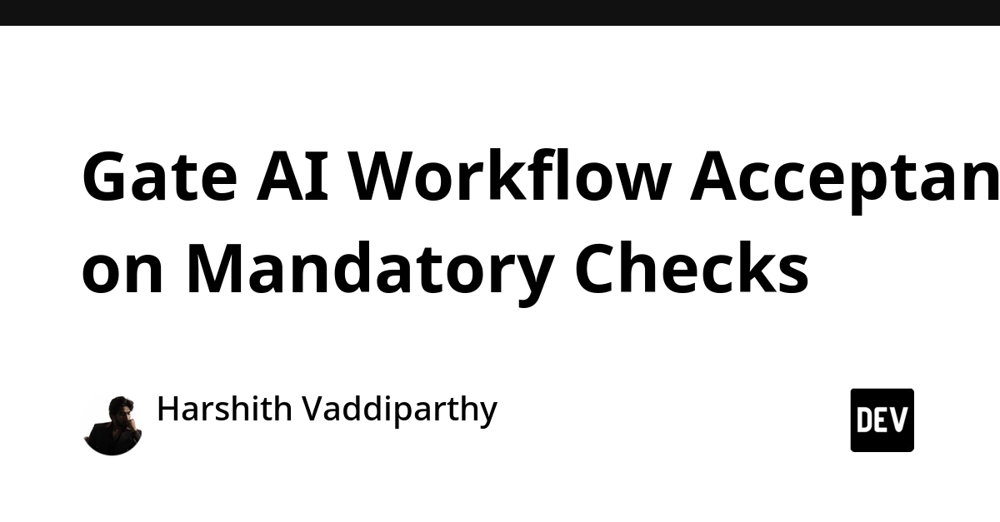
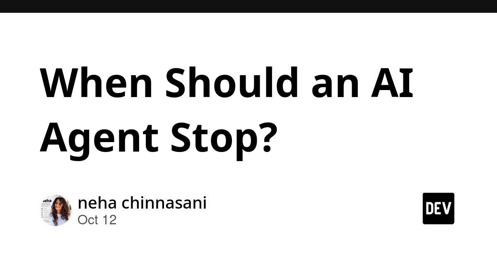
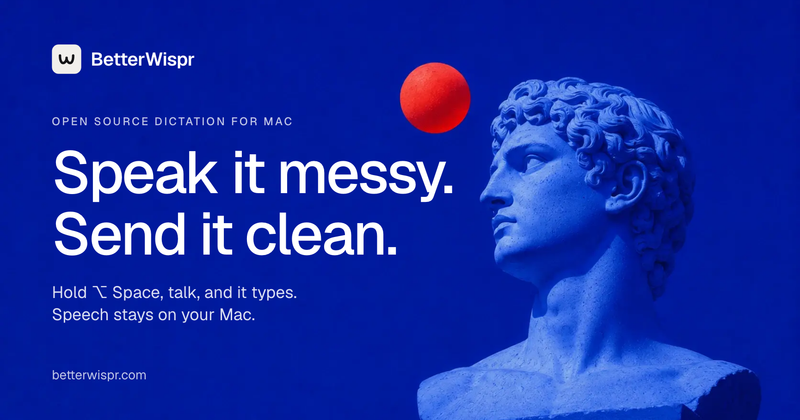

🔥 Top 3 (must read)
500B tokens later: Letting AI agents decompile a first-person shooter
(HN discussion, 173 points, 123 comments) A long write-up on running AI coding agents at very large scale on one hard, well-defined task: turning a game binary back into readable source. It covers how the agents were driven, what worked, what failed, and what it cost in tokens. Why it matters: this is a real case study of agents doing a big, multi-step coding job with little human help. Good input for how your team sets up and limits agent work.

Gate AI Workflow Acceptance on Mandatory Checks
An agent can set up most of a workflow correctly and still break one required approval step. If you only track an average score, that one failure hides inside a good-looking number. Why it matters: it argues for pass/fail "must-have" checks in agent evals, the same way CI treats a failing test. Useful if your team is adding AI-made changes to a delivery pipeline.

When Should an AI Agent Stop?
A short piece on a question most agent builders skip: not what the agent should do next, but when it should stop. Stop rules are part of the agent design, not an afterthought. Why it matters: runaway agent loops cost tokens and trust. A clear stop rule is a cheap guardrail for any Claude Code or Copilot agent workflow your team runs.

🤖 AI for developers
AI agents decompiling a first-person shooter
large-scale agent run; see Top 3.
Gate AI workflow acceptance on mandatory checks
treat required steps as hard gates, not averages.
When should an AI agent stop?
stop conditions as a design choice.
🎯 For me
Nothing today touches Node.js, TypeScript/React, Flutter, or automation testing directly. The closest fit for the EM angle is the "mandatory checks" piece: it maps well to adding hard gates for agent-made changes in CI.
💡 App ideas & indie builds
BetterWispr – free, open-source dictation for Mac
(HN discussion, 162 points, 94 comments) What it is: a Mac app that turns speech into text anywhere you type. User problem: paid dictation tools are closed and cost a monthly fee, and users want a local, free option they can trust. Why it inspires: a "free and open" clone of a popular paid tool, done well on one platform, can get real traction fast. Also a good example of a small desktop utility with a clear single job.

🎓 Try this
Add one "mandatory check" gate to an agent-driven workflow you already run. Pick one step that must never break, such as a required review or a passing E2E suite, and make the whole run fail if that step fails, no matter the average score. The reasoning is in Gate AI Workflow Acceptance on Mandatory Checks.